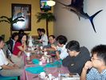

COSA活動記錄簿
留下COSA所辦活動之紀錄
首頁
相簿目錄
::
最新上傳
::
最新留言
::
熱門圖片
::
最高評分
相簿首頁
>
Linux World 參訪團
>
[2004] LinuxWorld參訪團
[2004] LinuxWorld參訪團
標題
+
-
檔名
+
-
日期
+
-
位置
+
-
147 次觀看
164 次觀看
147 次觀看
113 次觀看
112 次觀看
121 次觀看
109 次觀看
137 次觀看
127 次觀看
140 次觀看
156 次觀看

157 次觀看
18 張圖片，共 2 頁
1
2